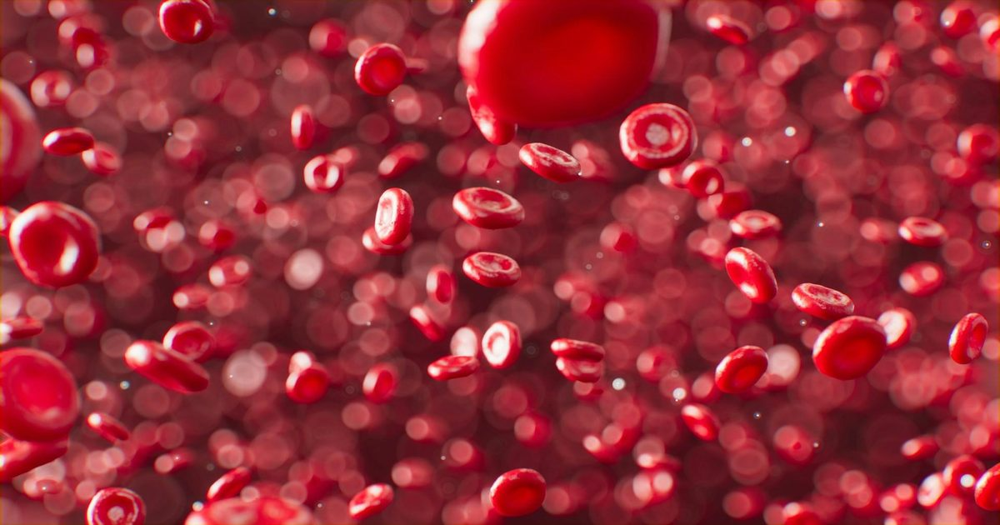

Клетки крови 80-летнего человека «омолодили» на 60 лет, превратив в нейральные стволовые
Немецкие исследователи нашли способ напрямую превратить незрелые клетки крови 80-летнего человека в стволовые клетки нервной системы.
Ученые полностью миновали промежуточную стадию, когда клетку сначала превращают в универсальную стволовую, «стирая» ее специализацию.
Проверка молекулярных меток старения показала, что в результате такого превращения биологический возраст полученных клеток снизился до уровня 20-летнего человека.